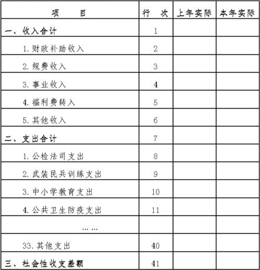

农业企业会计核算办法——社会性收支
一、总说明
（一）为了统一规范农业企业生物资产和农产品的会计核算和相关信息的披露，根据《中华人民共和国会计法》、《企业财务会计报告条例》、《企业会计制度》和国家有关法律、法规，并结合农业企业生物资产和农产品的特点，特制定《农业企业会计核算办法——社会性收支》（以下简称“本办法”）。
（二）中华人民共和国境内的国有农业企业（以下简称“企业”）因社会管理服务职能未移交当地政府而发生的社会性收支的会计核算和相关信息的披露，执行本办法。
（三）本办法所称社会性收入，是指企业取得的用于支付社会性支出的资金来源，主要包括：财政补助收入、规费收入、事业收入、福利费转入、其他收入等。财政补助收入，是指财政部门根据核定的预算拨入的用于企业社会性支出的款项。
规费收入，是指企业承担社会管理服务职能按规定收取的用于企业社会性支出的款项。
事业收入，是指企业从事事业活动取得的用于企业社会性支出的款项。
福利费转入，是指企业从提取的福利费中结转用于企业社会性支出的款项。
其他收入，是指企业取得的除以上四项以外的其他用于社会性支出的款项，如无偿调入社会性固定资产、接受捐赠和社会性固定资产清理净收入等。
（四）本办法所称社会性支出，是指企业承担社会管理服务职能而发生的与企业生产经营活动无关的各项支出，主要包括：公检法司、武装民兵训练、中小学教育、公共卫生防疫等各项支出。
（五）社会性收入与社会性支出的差额，在利润表中单独列示。
（六）本办法所称社会性固定资产，是指企业明确用于承担社会管理服务职能的固定资产。
（七）社会性固定资产的初始入账价值应当按照《企业会计制度》和《企业会计准则——固定资产》的规定确定。初始确认后发生的后续支出，均应在发生当期确认为社会性支出，不计入社会性固定资产账面价值。
（八）企业应当在社会性固定资产达到预定可使用状态时，将其初始入账价值一次性确认为当期社会性支出，并增加社会性固定资产累计折旧。
因调出、出售、报废、毁损、盘亏等原因而减少社会性固定资产时，应同时冲销社会性固定资产和社会性固定资产累计折旧。减少社会性固定资产过程中发生的相关费用或取得的收入，分别确认为当期社会性支出或社会性收入。
二、补充会计科目和说明
（一）会计科目的设置
本办法在《企业会计制度》基础上，增设以下一级科目，并对其核算内容进行了补充规定。
其他二级科目的设置，除本办法已有规定者外，在不违反统一会计核算要求的前提下，企业可以根据需要自行设置。
资产类
损益类
（二）补充会计科目的使用说明
1508 社会性固定资产
一、本科目核算企业社会性固定资产的原价。
二、企业应当根据本办法的规定，结合本企业的具体情况，
制定适合本企业的社会性固定资产目录和分类方法，作为社会性固定资产的核算依据。企业制定的社会性固定资产目录和分类方法等，应当编制成册，并按照管理权限，经股东大会或董事会，或经理（场长）会议或类似机构批准，按照法律、行政法规的规定报送有关部门备案，同时备置于企业所在地，以供投资者等有关各方查阅。
企业社会性固定资产目录和分类方法，一经确定不得随意变更，如需变更，仍然应按照上述程序，经批准后报送有关部门备案，并在会计报表附注中予以说明。
三、企业应当按照《企业会计制度》和《企业会计准则——固定资产》的规定，计算确定社会性固定资产的初始入账成本。
社会性固定资产初始确认后发生的后续支出，应在发生当期确认为社会性支出，不再增加社会性固定资产账面价值。
四、社会性固定资产的主要账务处理如下：
（一）企业购入不需要安装的社会性固定资产，借记本科目，贷记“银行存款”等科目。同时，将社会性固定资产的初始入账价值计入当期社会性支出，借记“社会性支出”科目，贷记“社会性固定资产累计折旧”科目；按购买该项固定资产所使用的财政拨款金额，借记“专项应付款”科目，贷记“社会性收入（财政补助收入）”科目。
（二）企业购入需要安装的社会性固定资产或自行建造社会性固定资产，先通过“在建工程”科目核算，安装完毕或建造完成达到预定可使用状态时再转入本科目，借记本科目，贷记“在建工程”科目。同时，将社会性固定资产的初始入账价值计入当期社会性支出，借记“社会性支出”科目，贷记“社会性固定资产累计折旧”科目；按该项固定资产所使用的财政拨款金额，借记“专项应付款”科目，贷记“社会性收入（财政补助收入）”科目。
（三）企业无偿调入或接受捐赠的社会性固定资产，借记本科目，贷记“社会性收入（其他收入）”科目；同时，借记“社会性支出”科目，贷记“社会性固定资产累计折旧”科目。
（四）社会性固定资产达到预定可使用状态后发生的后续支出，借记“社会性支出”科目，贷记“现金”、“原材料”、“应付工资”等科目。
（五）因调出、出售、报废、毁损、盘亏等原因减少的社会性固定资产，按照该项固定资产的初始入账价值，借记“社会性固定资产累计折旧”科目，贷记本科目。发生的清理费用或取得的清理收入，分别计入“社会性支出”或“社会性收入”科目。
五、企业应当设置“社会性固定资产登记簿”，按社会性固定资产类别、使用部门和每项社会性固定资产进行明细分类核算。
六、本科目期末借方余额，反映企业期末社会性固定资产的原价。
1509 固定资产累计折旧
一、本科目核算企业社会性固定资产的累计折旧。
二、社会性固定资产累计折旧的主要账务处理如下：
（一）企业购建、无偿调入或接受捐赠的社会性固定资产，应在达到预定可使用状态时，按照社会性固定资产的初始入账价值，借记“社会性支出”科目，贷记本科目。
（二）因调出、出售、报废、毁损、盘亏等原因减少的社会性固定资产，按照固定资产的初始入账价值，借记本科目，贷记“社会性固定资产”科目。发生的清理费用或取得的清理收入，分别计入“社会性支出”或“社会性收入”科目。
三、本科目只进行总分类核算，不进行明细分类核算。
四、本科目期末贷方余额，反映企业提取的社会性固定资产折旧累计数。
5311 社会性收入
一、本科目核算企业获得的用于支付社会性支出的资金来源，主要包括：财政补助收入、规费收入、事业收入、福利费转入、其他收入等。
二、社会性收入的主要账务处理如下：
（一）收到财政拨款时，按实际收到金额，借记“银行存款”科目，贷记“专项应付款”科目。
（二）企业购建的社会性固定资产在达到预定可使用状态时，按社会性固定资产购建过程中所使用的财政拨款金额，借记“专项应付款”科目，贷记本科目（财政补助收入）。
（三）企业无偿调入或接受捐赠取得的社会性固定资产，按照社会性固定资产的初始入账价值，借记“社会性固定资产”科目，贷记本科目（其他收入）。
（四）使用财政拨款支付除社会性固定资产购建以外的其他社会性支出时，按实际发生额，借记“社会性支出”科目，贷记“现金”、“银行存款”、“应付工资”等科目；同时，借记“专项应付款”科目，贷记本科目（财政补助收入）。
（五）企业取得的规费收入，按规定收取的金额，借记“其他应收款”、“银行存款”、“现金”等科目，贷记本科目（规费收入）。
（六）企业取得的事业收入，按规定收取的金额，借记“其他应收款”、“银行存款”、“现金”等科目，贷记本科目（事业收入）。
（七）企业按规定将提取的福利费用于社会性支出时，按实际使用的福利费金额，借记“应付福利费”科目，贷记本科目（福利费转入）。
（八）企业收到其他收入时，按实际发生额，借记“现金”、“银行存款”等科目，贷记本科目（其他收入）。
三、企业应按财政补助收入、规费收入、事业收入、福利费转入、其他收入等设置明细账，进行明细分类核算。
四、期末，应将本科目的余额转入“本年利润”科目，结转后本科目应无余额。
5611 社会性支出
一、本科目核算企业因承担社会管理服务职能而发生的与企业生产经营活动无关的各项支出，主要包括：公检法司、武装民兵训练、中小学教育、公共卫生防疫等各项支出。
二、社会性支出的主要账务处理如下：
（一）企业购建的社会性固定资产在达到预定可使用状态，按该项社会性固定资产的初始入账价值，借记本科目，贷记“社会性固定资产累计折旧”科目。
（二）使用财政拨款支付除社会性固定资产购建以外的其他社会性支出时，按实际发生额，借记本科目，贷记“现金”、“银行存款”、“应付工资”等科目；同时，借记“专项应付款”科目，贷记“社会性收入（财政补助收入）”科目。
（三）使用除财政拨款以外的其他资金发生社会性支出时，按实际发生额，借记本科目，贷记“现金”、“银行存款”、“应付工资”等科目。
三、企业应按社会性支出类别或项目设置明细账，进行明细分类核算。
四、期末，应将本科目的余额转入“本年利润”科目，结转后本科目应无余额。
三、补充报表格式及编制说明
（一）在资产负债表的“固定资产原价”项目下，增设“其中：社会性固定资产原价”项目，反映企业社会性固定资产的原价；在“累计折旧”项目下，增设“其中：社会性固定资产累计折”项目，反映企业提取的社会性固定资产累计折旧。
（二）“社会性收入”科目贷方发生额减去“社会性支出”科目借方发生额后，在利润表中增设“社会性收支差额”项目，反映企业社会性收入与社会性支出的差额。
（三）本办法对《企业会计制度》“利润表”补充了附表4“农业企业社会性收支明细表”，并说明其编制方法。
（四）在现金流量表的“四、汇率变动对现金的影响”下增设“五、社会性收支的现金流量”，用于反映企业发生的与社会性收支有关的现金流量；同时，将“五、现金及现金等价物净增加额”改为“六、现金及现金等价物净增加额”。
（五）本办法对《企业会计制度》会计报表附注的披露内容补充了以下规定：
1.社会性固定资产的标准、分类、计价方法、各类社会性固定资产的预计使用年限，如有在建工程转入、出售、置换、抵押和担保等情况的，应予说明。
2.有关社会性固定资产在建工程的基本情况，包括年初余额、本年增加额、本年减少额、年末余额等。
3.社会性收支的来源和用途。
农业企业社会学收支明细表（格式）
| 编制单位： | ＿＿＿＿年度 | 会企02表附表4
单位：元 |
|

|
农业企业社会性收支明细表编制说明
一、“农业企业社会性收支明细表”是企业编制的利润表（会企02表）的附表4（以下简称“本表”）。本表反映报告期企业社会性收入和社会性支出的有关情况。
二、本表“项目”栏按社会性收入、社会性支出两类设置，社会性收入、社会性支出又分别按照其资金来源和用途设置。
三、本表“上年实际”、“本年实际”栏，分别根据上年和本年“社会性收入”、“社会性支出”所属明细科目的记录分析填列。
四、本表有关项目对应关系如下：
2行+3行+4行+5行+6行=1行
8行+9行+10行+11行+……+40行=7行
1行-7行=41行